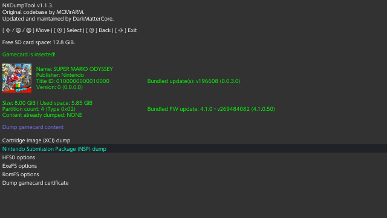
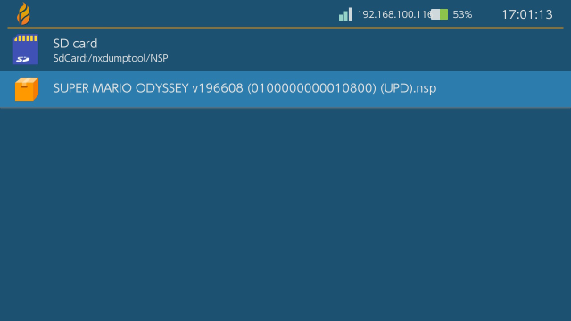

Switch Dump and Install Guide
This guide has been made and tested using goldleaf 0.7.3 and nxdumptool 1.1.7
Ban risk
Installing any sort of nsp's gets you banned as soon as you connect to Nintendo services. AFTER INSTALLING ANY NSP, KEEP YOUR SYSTEM PERMANENTLY OFFLINE!
EmuMMC is strongly recommended
Cause you need to keep your system offline after installing an nsp, EmuMMC is strongly recommended as with it you can still go online on sysnand while keeping your emummc permanently offline.
Remove all your wifi networks / set up 90dns on all your wifi networks
Again, in preparation for this you need to remove all your wifi networks or set up 90dns on all your wifi networks. Do this now. To set up 90dns, click here
Bugs with updates
If you experience a bug while installing gamecart based updates, contact me via discord (Such Meme, Many Skill#2921). This is something that's not completely understood yet.
Step 1: Preparations
This bit will get you the required files and programs for installing cart dumps
What you need
- The .nro version of GoldLeaf
- The .nro version of NXDumpTool
- A Modified Hekate_ipl.ini
- Hekate fs patches
- Your prod.keys file, generated by Lockpick_RCM
Instructions
- Copy the .nro of Goldleaf and NXdumptool to the switch folder on your sd card
- Place your prod.keys file into your switch folder, if you ran lockpick_rcm it will likely already be in the switch folder
- Copy (or replace)
patches_template.inito the bootloader folder on your sd card - Replace the
hekate_ipl.inifrom the bootloader folder with the one you just downloaded- Note: if you're not using the hekate config from the nh guide, you can add
kip1patch=nosigchkright underneath the line withfss0=xinstead of replacing your ini - Note: you need to be booting via hekate for this to work, fusee-primary will not work
- Note: If you copied these files while booted into the switch os itself you need to restart your switch for the changes to take effect
- Note: if you're not using the hekate config from the nh guide, you can add
Step 2: The Dump

Instructions
- Open the Homebrew Menu and open nxdumptool
- Select
Dump gamecard content, thenNintendo Submission Package (NSP) dump- If you get a selection between the base application and the bundled update do the base application first
- Turn the
Split output dump (FAT32 support)function On- When available, turn the
Generate ticket-less dumpfunction On
- When available, turn the
- Select
Start NSP dump process- It will now start dumping your cart
- When done, press any button to return to the last menu, press b a bunch more to return to the main dump menu. If your cartridge also contains a game update refollow step 2 to 4 again but instead dump the game update.
- Press + to exit to the hbmenu
Your game dump got dumped in the /nxdumptool/nsp folder
Step 3: The Install
If you haven't read the warnings on the top of the page yet, do so now
There is quite important information about ban risk up there. Also, if you haven't removed your wifi networks/set up 90dns yet, do so now
Eject your Gamecart before the install!
A bug has been identified that prevents you from opening the game after you've installed the gamecarts included gamecart update. Remove the gamecart before you install the dumps!
- Open the Homebrew Menu and open Goldleaf
- Select
Explore content - Select
SD card - Navigate to and select
switch, thennxdumptool, thenNSP. You should be here now:  - Install your BASE dump of the game by selecting the nsp with A, then selecting
Install, then selectingSD card, then selectingInstallagain- If you also dumped your game update, install the update nsp the same way too
- After the install(s) finished installing, Press - to exit to the hbmenu or the home button to exit to the home menu.
You should now see your cart dump installed. You can delete or move the nsp files in /switch/nxdumptool/nsp to your pc.